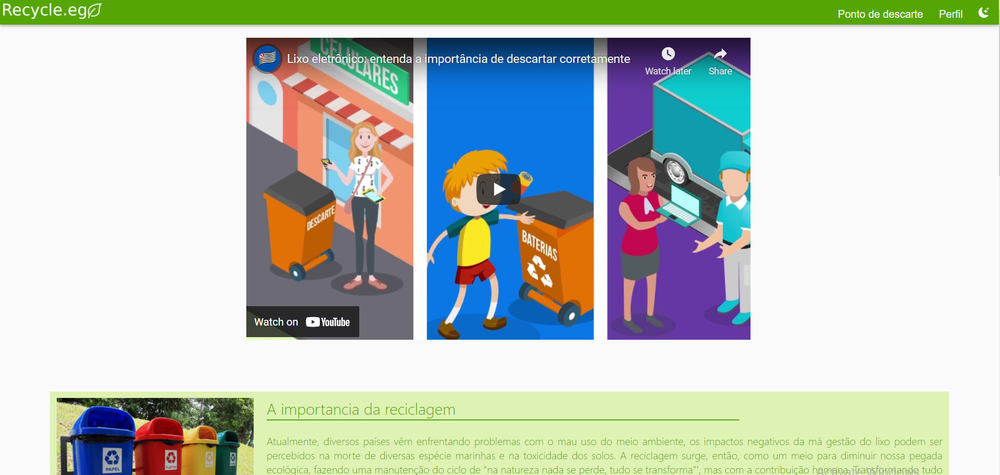

Sendo uma das matérias que na minha opinião mais me deixou interessado no curso, Trabalho interdisciplinar aplicações WEB (TIAW) nos proporcionou conhecimentos na qual jamais imaginaria ter antes. Graças as suas atividades.
Durante todo o período do primeiro semestre, desenvolvemos um produto do zero, passando por todas as etapas - Desde o brainstiorming até o seu desenvolvimento -, onde tivemos que realizar um produto com base em uma problemática. Criamos o Recycle.eg, um site onde tentamos gamificar a coleta de lixo eletrônicos como incentivo para as pessoas reciclarem mais os lixos eletrônicos.
Miro: Ferramenta na qual nos ajudou no desenvolvimento do nosso site enquanto estava nos estágios iniciais. Utilizamos essa plataforma para jogar todas as nossas ideias "no papel". Além de termos realizados partes importantes como o desenvolvimento de Stackholders, público alvo e entre outros conceitos que nos ajudaram no desenvolvimento.